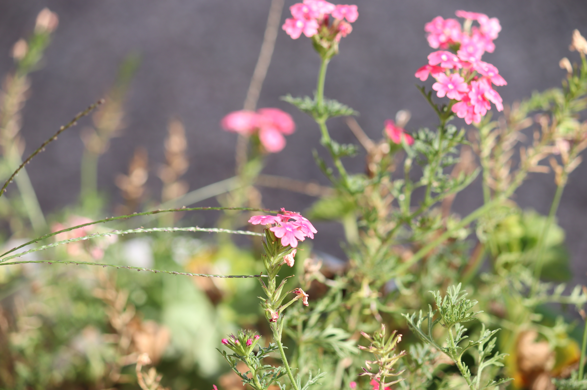

쌍떡잎식물 진달래목 진달래과
영산홍(Rhododendron indicum)
“바닷가 옆 산기슭에 주로 서식하는 식물”
높이 15~90cm에 달하는 줄기를 지녔으며 잘 갈라져 잔 가지가 많고 갈색 털이 있는 가지를 지녔고 꽃은 4~5월에 가지 끝에 홍자색으로 피고 지름 3.5~5cm이며 꽃의 밑부분에는 일찍 떨어지는 넓은 비늘조각이 있다.
잎이 약간 두껍고 광택이 있으며 가장자리가 밋밋하며 뒷면 맥상과 표면에는 갈색 털이 있고 어긋나지만 가지 끝에서는 모여 달리고 좁은 바소꼴으로 길이 1~3cm, 너비 5~10mm이다.